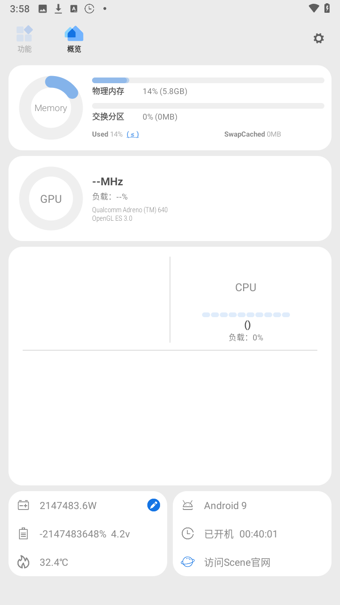
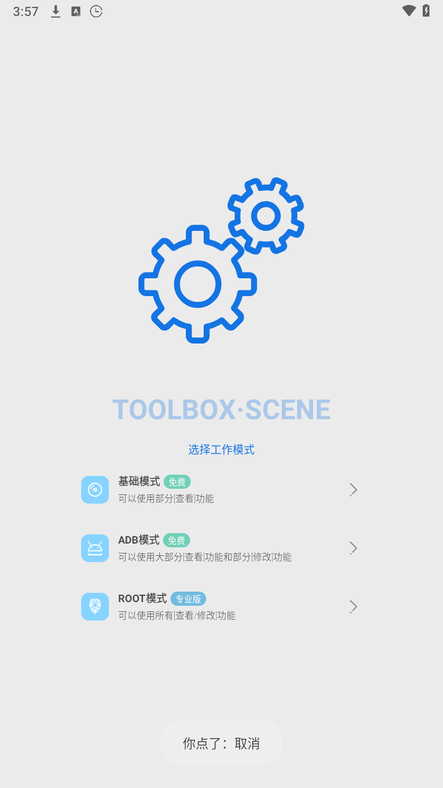

从"手机性能读数器"到"安卓玩机控制台"——Scene 这几年到底进化了什么
回顾 Scene 的迭代轨迹：从最早只能看 CPU 频率的小工具，到如今覆盖帧率、温控、耗电、应用管理的全能玩机控制台，看看它的优先级始终在哪里。
开头：现在这版，它已经不是当初那个读数器了
我第一次接触 Scene 的时候，它还是个挺克制的工具——打开就是一块仪表板，CPU 大核中核小核的频率列得清清楚楚，温度曲线实时跳动，仅此而已。那时候它在"手机性能监控"这个赛道里不算最出风头的，但有一群玩家认死理似的用它。
现在的 Scene 完全不是同一个量级的东西了。概览页仍然保留着那些频率读数，但下拉菜单翻好几屏才能看完所有模块：帧率记录、充电统计、耗电排行、应用冻结、场景模式、温控预设、权限治理……连屏幕检测这种边缘功能都做进去了。每次打开Scene官网看更新都能看到新模块冒出来，功能密度已经有点让人怀疑——这到底是一个"性能工具"还是一个"玩机控制台"？

来路：它从哪起步
样本文档里没提过 Scene 的早期历史，版本号也几乎没出现——这本身挺有意思的。一个工具类应用，文档通篇不讲自己的版本迭代，只讲"这个功能怎么用、那个读数怎么看"，说明团队的心思主要花在让用户把工具用起来，而不是给自己的产品史写编年体。
但从功能的分层结构能反推出它的来路。Scene 现在有三层工作模式：基础模式、ADB 模式、ROOT 模式。这三层不是并列的，是递进解锁的——基础模式所有人能用，ADB 模式需要授权 shell 级权限，ROOT 模式则要彻底解锁系统。这个分层设计本身就是一个版本进化的痕迹：最早的 Scene 可能只有基础模式那一点点读数能力，ADB 模式是后来加的"主力层"，再后来才有 ROOT 模式的专业级入口。
为什么这么推？因为 ADB 模式解锁的那些功能——帧率记录、应用冻结、场景模式、温控预设——恰恰是现在用户最常用的东西。如果 Scene 从一开始就有 ROOT 模式，ADB 模式这一层就显得多余了。反过来，如果它最早只有基础模式的读数，然后一步步往上加权限层级，那现在的三层结构就顺理成章。
关键转折点：ADB 模式把门槛拉下来了
我觉得 Scene 真正成为"主流玩机工具"，是在它把 ADB 模式做顺之后。
早期的玩机工具要么要 ROOT（门槛高，大部分人不敢碰），要么只能读读数（功能弱，看完性能数据也改不了什么）。Scene 的 ADB 模式卡在中间——它不要求你解锁 Bootloader、不要求你刷 Magisk，只要用 Shizuku 或者无线调试把 shell 权限给它，就能用帧率记录、应用冻结、场景模式、温控预设这些实打实的功能。这在当时是个挺聪明的定位：把"能改东西"的能力给了不想折腾 ROOT 的普通玩家。
Android 11 之后系统原生支持无线 ADB 调试，Scene 又跟进了 Shizuku 这条路线——全程在手机上配对、启动、授权，连电脑都不用插，装的时候直接从官方下载拿就行。这个改动把 ADB 模式的激活门槛从"会用命令行"降到了"会看教程"，用户量一下就上来了。我身边好几个以前只用冰箱和黑阈的朋友，都是从这时候开始转用 Scene 的——一个应用覆盖了冻结、温控、帧率记录，比装三四个工具省事多了。

团队一直在死磕什么
从迭代节奏看，Scene 团队的优先级非常稳定。
第一优先级是"让数据看得见、能联动"。逐核频率是它最早的特色，后来加的帧率记录页面可以把帧率曲线、CPU 频率曲线、温度曲线叠在同一张图上——这不是随便加几个折线图，而是解决了玩家最痛的那个问题："我掉帧了，到底是手机温控限频了，还是 GPU 扛不住了，还是游戏自己卡了？" 四条曲线叠在一起，掉帧的那一刻看 CPU 频率和温度怎么变，根因直接暴露。这个设计思路后来扩展到了充电统计（电压电流功率三曲线）和耗电统计（按应用拆分排行 + 后台唤醒次数），本质上都是"把零散的数据拉到一张图上对比"。
第二优先级是"让改东西有层次"。基础模式只能看，ADB 模式能改但改的是"预设"（温控只有保守/标准/激进三档，CPU 调频只有整体档位），ROOT 模式才给精细控制权（温控五段式曲线、每核独立频率）。这个分层不是技术限制——技术上 ADB 也能调得更细，但团队故意只给 ADB 模式三档预设，就是怕普通玩家调坏了退不回去。连调频之前都提示你"先记下来默认值，调坏了好退"——这些操作细节在Scene文档里也有更详细的说明，这个细节能看出来团队对"用户改崩了怎么办"这件事想得很细。
第三优先级是"把边缘功能塞满"。屏幕检测、传感器校准、系统信息查询……这些功能对核心用户来说可能用不上，但它们让 Scene 在"一个应用解决所有玩机需求"这个方向上越走越远。我印象中 Scene 的更新日志里总有一两条是"新增 XX 检测"或者"优化 XX 信息展示"，不像有些工具类应用更注重核心功能的深度迭代，Scene 明显在走"宽度优先"的路线。
有件事很值得注意：文档里通篇没提过"我们新加了什么大功能"或者"哪个版本改了什么"，只讲"怎么用"。这说明团队不喜欢用版本号当营销点，或者说他们觉得功能本身比版本迭代的故事更重要。从用户视角看这是好事——不用追着更新日志看"这次又改了什么"，打开应用该用的功能就在那里。
他们一直不管什么
反过来看，Scene 也有一些东西做得比较克制。
比如社区分享和数据同步。你录了帧率曲线可以存到本地，但不能直接分享给朋友对比，也没有云同步换手机之后还能看以前的记录。这对很多玩机玩家来说是刚需——跑分软件都能比朋友高多少，帧率曲线为什么不能直接分享？但 Scene 到现在也没做这件事。我猜要么是团队觉得本地数据才安全，要么是资源有限顾不上。
再比如厂商系统的深度适配。小米 MIUI、OPPO ColorOS、华为 HarmonyOS，每家的温控策略和调度器逻辑都不一样。Scene 能读通用的频率和温度数据，但要改到厂商专属的参数就没辙了。它的 ADB 模式只能在通用层面上给三档预设，做不到针对每家系统的精细调校。这可能也是 ROOT 模式一直保留的原因——真要深度调，还是得 ROOT。
预判：照这个路线，下一步大概率走向哪里
纯从迭代规律推，不当官方口径：
第一，宽度还会继续加。现在 ADB 模式已经覆盖了大部分玩机场景，但还有一些边缘地带——比如网络诊断、电池健康度、存储读写速度测试——这些功能加进去的成本不高，能进一步巩固"一个应用全搞定"的定位。Scene 很可能继续往这个方向填模块。
第二，数据联动会更深。现在帧率曲线能和 CPU/温度叠在一起，下一步大概率是把充电统计、耗电统计也串起来——比如玩游戏时的耗电曲线能不能和帧率曲线联动，看看"掉帧那会耗电是不是也飙升了"。这条线是 Scene 的核心优势，应该不会停。
第三，ADB 模式的精细度可能会上一个台阶。现在 ADB 模式的温控只有三档预设，CPU 调频也只有整体档位。如果 ROOT 模式的用户量一直在某个比例徘徊（比如 10% 以内），团队可能会考虑给 ADB 模式开放更多可调参数——不用到 ROOT 模式那种每核独立，但至少给个五档温控预设？当然这有风险，得权衡普通玩家改崩的概率。
有一点比较确定：Scene 不会往"社区化"或者"内容平台"方向走。从它的文档风格、功能结构、甚至应用界面的克制感来看，团队是那种"把工具做好就行"的工程向团队。社区、分享、云同步——这些都不是他们的主战场。
总结
从最早那个只能看 CPU 频率的读数器，到现在覆盖性能监控、功耗分析、应用管理、系统调校的玩机控制台，Scene 的进化轨迹其实挺清晰的。它抓住了一个中间地带：比纯读数工具强，比 ROOT 工具门槛低，然后在这个地带里不断填充功能模块、加深数据联动。团队的核心优势——让玩家能看懂、能联动、能分层修改——一直没变。
如果你还没在用 Scene，可以先体验一下。
这套资料我同步到了三个仓库里：GitHub 作为主仓库，Gitee 和 GitCode 是国内镜像方便访问，三个仓库都能找到对应的文档目录。